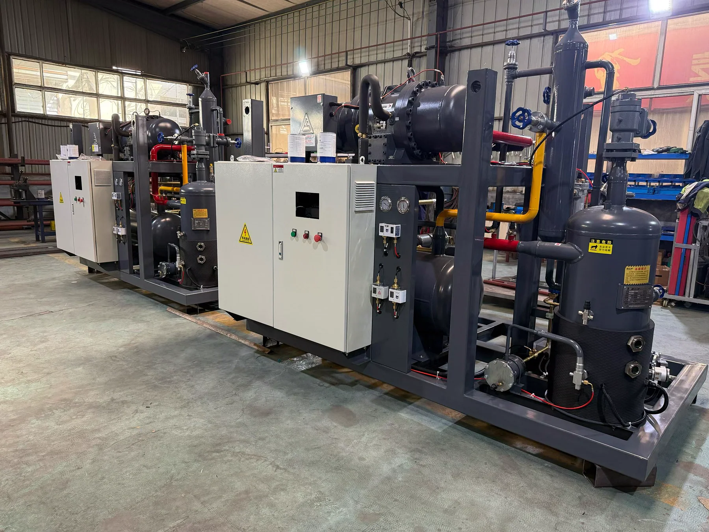
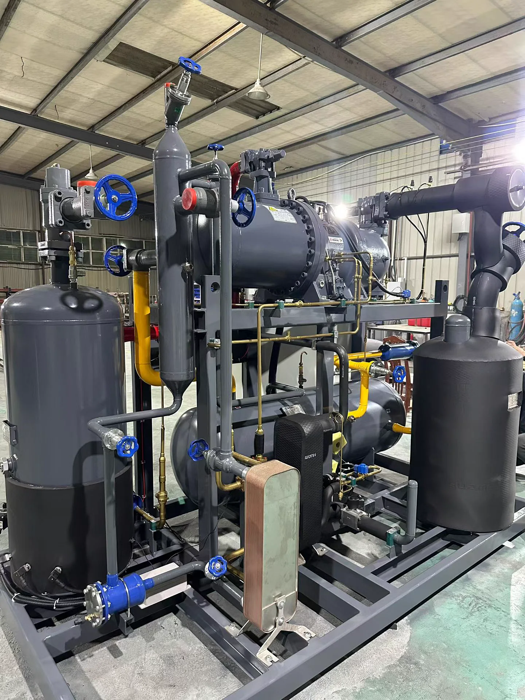
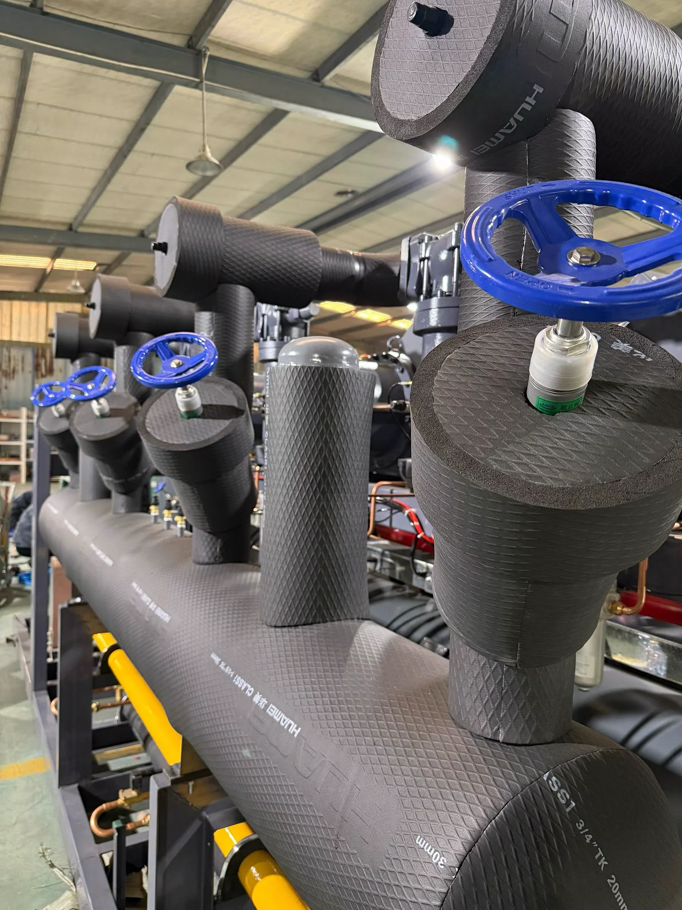
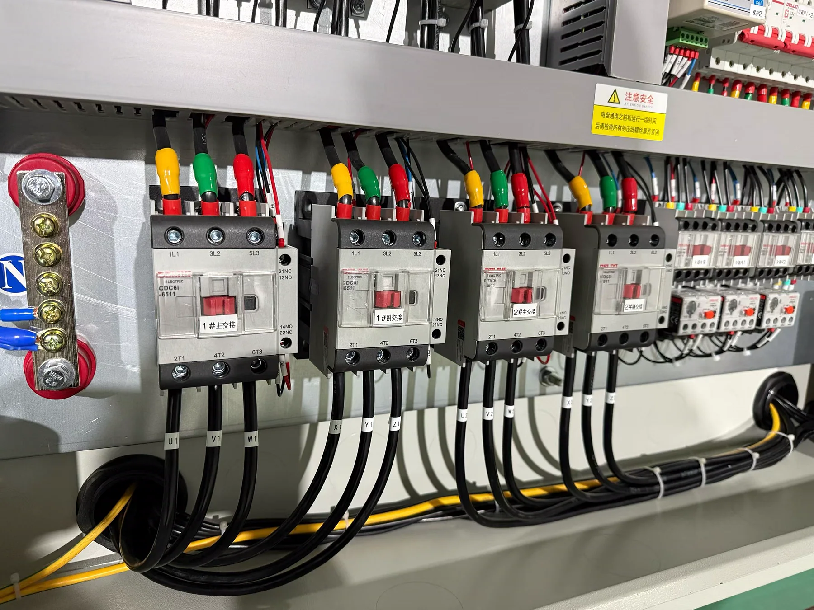
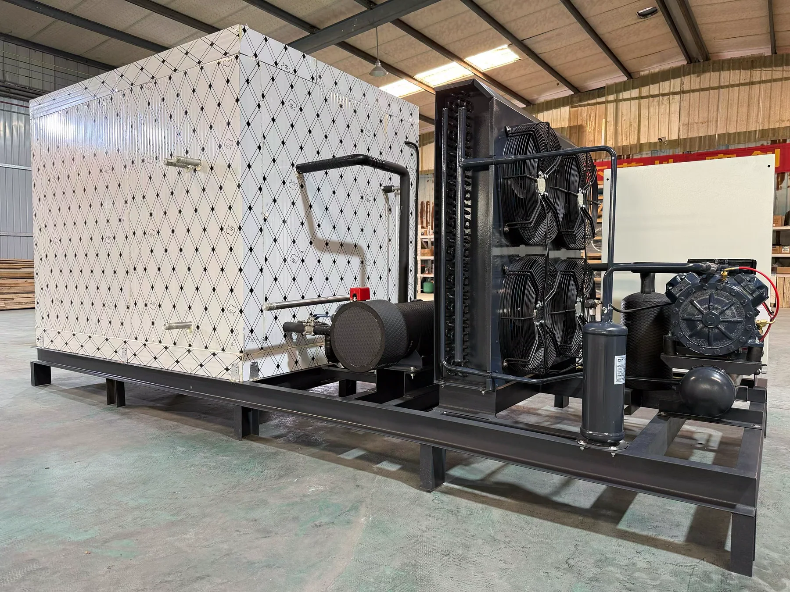
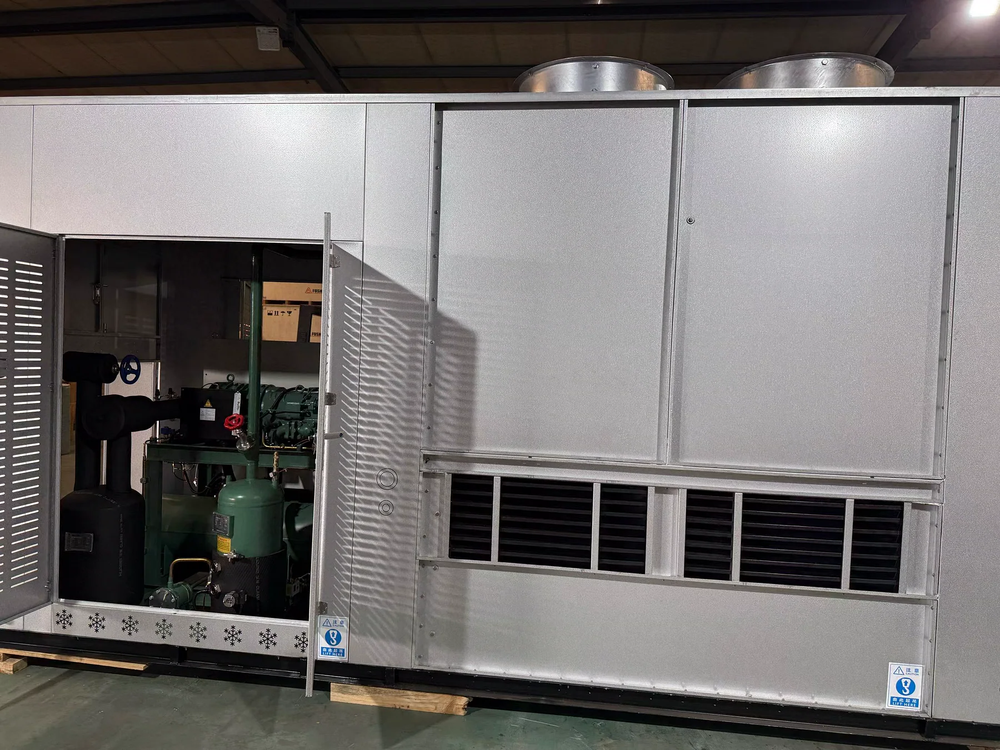

项目与方案
围绕实际场景梳理需求、设备选型和系统方案。
LIFE · CRAFT · TECHNOLOGY
你好，我是阿杰，也使用 Brady Ci 这个名字。这里有庭院里的四季，也有 AI 生成的想象；有制冷行业的真实实践，也有一个普通人的学习与成长。

SELECTED WORK
不是单一职业标签，而是我正在认真投入的几条创作与实践线。
PROFESSIONAL PRACTICE
它不是网站的全部，却是我多年工作经验、判断力和解决问题能力的来源。
围绕实际场景梳理需求、设备选型和系统方案。
把现场经验整理成普通人也能看懂的文章与案例。
逐步建设冷量估算、参数查询等轻量实用工具。
EQUIPMENT & SYSTEMS
真实设备、现场装配与关键部件，构成一套制冷系统看得见的基础。

成套机组系统与设备的完整呈现
机组装配设备、容器与管路协同
管路细节保温、阀件与现场工艺
电控系统控制、保护与运行逻辑
冷库配套围护结构与制冷设备组合
一体化设备结构、维护空间与现场应用以上均为真实设备与现场记录。点击图片可查看大图。
STORIES & NOTES
作品之外，也把过程和感受留下来。
ABOUT ME · 阿杰 / BRADY CI
这个网站是我的长期数字主页。它不会只展示完成得漂亮的结果，也会记录学习、试错与慢慢变好的过程。
从制冷行业出发，我正在把庭院生活、影像创作、AI 工具和个人写作连接起来，让经验变成作品，也让兴趣产生长期价值。
FOLLOW MY WORK
公众号「慢光之间」记录创作背后的过程、生活中的感受，以及那些值得慢慢写下来的事。
使用微信扫码关注CONTACT
如果你也关注庭院、AI 创作、制冷技术或个人成长，可以按照交流方向添加对应微信。
庭院、植物、AI 影像与日常创作
制冷技术、冷库项目与设备应用